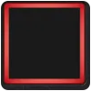
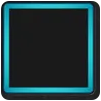
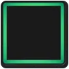
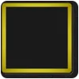
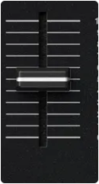
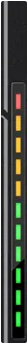
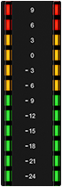
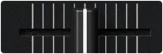

BANK 01 / NAVIGATION
Buttons that
still feel like
buttons.
BANK 02 / PRIMARY ACTIONS
Press the
real thing.
BANK 03 / ROTARY
One deck.
Different
hands.
BANK 04 / INACTIVE DECK SEQUENCE
The controller
is awake.




BANK 05 / MOTION PARTS
Rails, meters,
movement.



